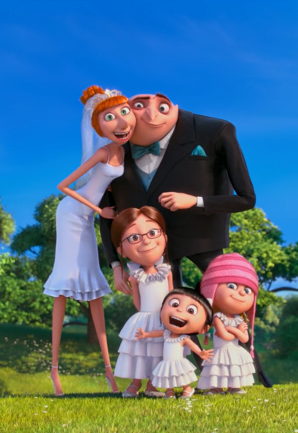
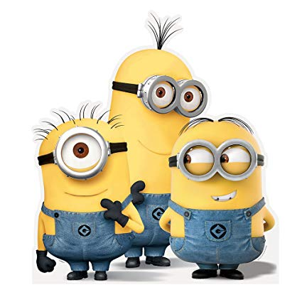
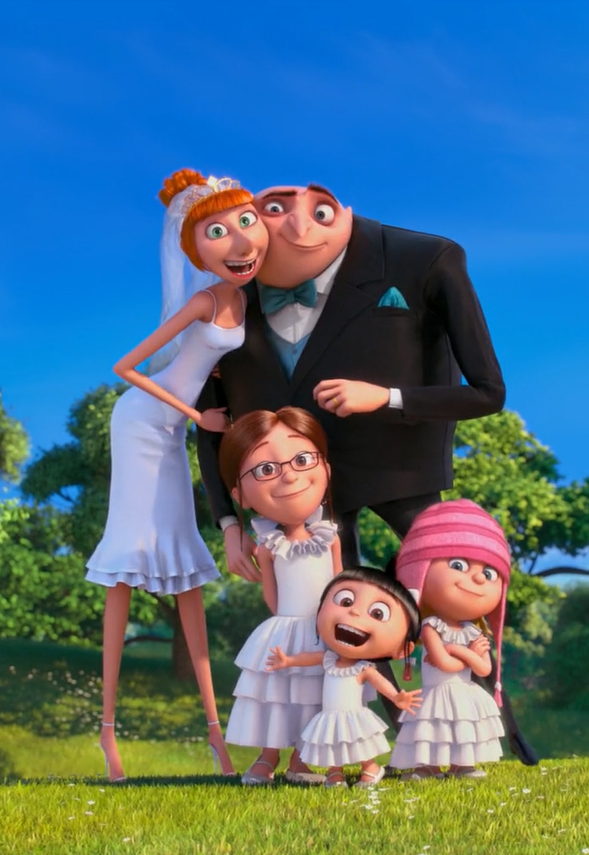
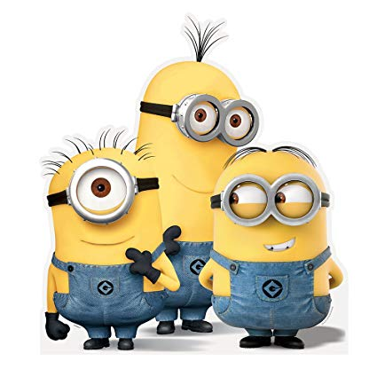

The Life of Gru | Videos | Minions | Quiz!!!
In a happy suburban neighborhood surrounded by white picket fences with flowering rose bushes, sits a black house with a dead lawn. Unbeknownst to the neighbors, hidden beneath this home is a vast secret hideout. Surrounded by a small army of minions, we discover Gru, planning the biggest heist in the history of the world. He is going to steal the moon. Armed with his arsenal of shrink rays, freeze rays, and battle-ready vehicles for land and air, he vanquishes all who stand in his way. Until the day he encounters the immense will of three little orphaned girls who look at him and see something that no one else has ever seen: a potential Dad. The world's greatest villain has just met his greatest challenge: three little girls named Margo, Edith, and Agnes.
 


